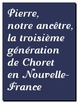

|
Descendants
of Pierre le cadet Choret

|
|

|
|
Pierre and Marie-Anne had a large
family, but six of their eighteen children died in
infancy, including twin girls. All were born in
Beauport and baptized in the chapel of
Notre-Dame de la Miséricorde in Beauport .
Some spent their whole lives there, but several moved
to the Montreal region.
|
Marie-Anne
Born on January
18, 1688, the eldest daughter was given her mother's first name.
Her godparents were Jean Beaugis, her mother's brother, and
Magdeleine Giroux, wife of Pierre l'aîné Choret, her
father's brother.
Marie-Anne died on February 5, 1688, in Beauport. She
did not live a month, as often happened at the time.

|
| Pierre
Born on February
24, 1690, the eldest son was given his father's first name,
again to keep the name going (as already
seen in the Childhood chapter). His godparents were Pierre
Parent and Marie Chauveau. 
On February 1, 1712, in the parish of St-Charles
Borromée in Charlesbourg, Pierre married Angélique Turcot, daughter of Jean
and Rose Marie dite Roy. They had signed a marriage
contract on January 24, before notaire (notary) J.Robert
Duprac.
Pierre died
on July 22, 1749, in Sault-au-Récollet, Montreal.
His widow remarried on October 5, 1750, to Jacques Messier in
Sault-au-Récollet.
It is
from Pierre, the eldest son of Pierre le cadet, that we are
descended. So from the third generation on, our
ancestors were settled in the Montreal region.
Visit the site devoted to Pierre Choret; you can reach it by
clicking the "The 14 generations" link at the top of
this page.
|
Jean-Pierre
Born on September
26, 1694; his godparents were "Pierre Marescot,
the King's Writer aboard his ship La Charente, and Dame Catherine
Nafraishous, wife of Sieur François Foucaut, bourgeois of
Quebec". Jean-Pierre seems to have had important
people as godparents, rather than relatives, neighbours or
friends as was usual.
Be that as it may, Jean-Pierre died in Beauport on April 13,
1696, at the age of two and a half.
|
| Hilaire
Born in 1695,
Hilaire married Geneviève Brault dite Pominville in Beauport on July 23, 1715;
she was the daughter of Georges and Marie-Magdeleine
Marchand. We have no other details about
Hilaire's life.
|
Jacques
Born on July
30, 1696; his godparents were Jacques Huppé and Thérèse
Bellanger. Like his older brother Pierre, he too
married in the parish of St-Charles Borromée. He married
Magdeleine Chrétien, daughter of Jean-Charles and Marguerite
Roy. Their marriage contract was signed on September 18,
1718, before notaire J. Robert Duprac.
In the records of notaire Louet, dated May 18, 1724, in Quebec,
there is a transfer of land by Pierre Choret and Marie-Anne
Beaugis to their son Jacques and his wife Magdeleine
Chrétien.
Jacques did not enjoy this land for long,
since he died on February 2, 1725, in the parish of
Notre-Dame de Québec.
|
Charles
Born on June 19,
1697; his godparents were Charles Perthuis and Charlotte Choret.
Charles married first, on September 20, 1723, in the
parish of Notre-Dame de Québec, Marie-Josephte Roy, daughter of
Jean and Jeanne Hotte.
The records of notaire J. Robert Duprac mention an
inventory, made on June 3, 1726, in which Pierre Choret and
Marie-Anne Beaugis transfer land to their son Charles and
daughter-in-law Marie-Josephte Roy.
Charles remarried on November 27, 1737, in Beauport, to
Marie-Ursule Huppé, daughter of Antoine and Marie-Ursule
Durant. Note that the Huppés had been neighbours of
Mathieu's ancestral land since 1647. The marriage
contract was signed on November 30 before notaire Noël Duprac,
that is, after the wedding, which is exceptional.
Charles died in Beauport on September 13, 1774.
|
Marie-Joseph Born in 1699, she married Jacques-
Magnan, son of Georges and Marguerite Lagarde, in Montreal on April 29, 1726.
|
Françoise Jeanne Born in 1700, she married
Mathurin Maurier, son of Jean and Marie Michaud, in Beauport on November 17, 1721. Mathurin remarried on October 26, 1750, to
Madeleine Gilbert, daughter of Étienne and Marguerite Thibault.
|
Ignace
Born on July
7, 1701, he married Josephte Martin, daughter of Pierre and Marie-Anne
Limousin, in Ville-Marie (Montreal) on June 21,
1723. Their marriage contract was signed on June 20,
1723, before notaire Raimbault.
A contract was signed between the Sulpician Fathers of the Island of
Montreal and Pierre Choret le cadet in the office of P. Raimbault
senior, on May 1, 1724 (deed 3138). By this contract Pierre
Choret and Marie-Anne Beaugis transferred 240 arpents of wooded
land to their son Ignace Choret and their daughter-in-law.
Ignace remarried on June 13, 1740, at St-Joachim de Pointe-Claire,
to Marie-Josephte Gauthier, daughter of Jean-Baptiste and Marie
Prézot. Their contract was signed on July 15 before
notaire Raimbault.
Ignace died on September 25, 1750, at Ste-Geneviève de
Pierrefonds. His widow remarried on January 25, 1751, in the
same place, to Philippe Rollin, son of Philippe and Charlotte
Blénier.
|
| Marie-Anne
and Jeanne were
twins born on June 20, 1703, who died the same
year.
|
| Jean-Baptiste
Born on September
7, 1705; his godparents were Jacques Parent and Suzanne
Huppé. He died on September 20, 1705.
|
| François
Born on January
25, 1708; his godparents were François Langlois and Marguerite
Parent. He died on September 19, 1714, in Beauport,
after receiving extreme unction.
|
Jean-Baptiste
Born on October
24, 1710; his godparents were Jacques Amesse and Suzanne Le
Normand.
He married Angélique Rapidiou, daughter of Jean and Françoise
Fleury, on April 13, 1733, in the parish of St-Laurent in
Montreal. They signed a first marriage contract on April
12, signed by Father Tessier, curé of the parish of St-Laurent.
Then a second contract was signed on July 10 before
notaire J.B. Adhémar. Angélique died in 1753, and an
inventory was drawn up by notaire G. Hodiesne on January 18,
1754.
Jean-Baptiste remarried on January 28, 1754, in the parish of
Saints-Anges de Lachine, to Marie-Anne Moncton dite Lamouche,
daughter of Robert and Marie-Isabelle Chénier. Their marriage
contract was signed on January 19 before notaire Hodiesne.
|
Louis
Born on August 1, 1713; his godparents were Louis-Josaphat Capue and Françoise
Lemaistre.
Louis married Geneviève
Roy, daughter of Jean and Anne Jeanne Hotte, in Beauport on February 19, 1731. Geneviève was the
sister of his brother Charles's wife.
Louis remarried on February 22, 1745, in Quebec, to
Marie-Josephte Bouthillet, daughter of Jacques and Marguerite
Verreau, widow of Pierre-François Paris.
In the 1744 census of the inhabitants of the town of Quebec,
listed as living in Champlain (today rue du Petit
Champlain?) are Louis Choret, 33, Josephte his wife, 28, and 4
children: Thérèse, 8, Marie-Josephte, 7, Catherine, 6,
and Élisabeth, 4. Marie-Josephte Bouthillet died in
Quebec on August 21, 1762.
|
| Michel
Born in 1715, he
married Thérèse Trottier, daughter of Joseph and Catherine Martin,
in the parish of Saints-Anges de Lachine.
|
| Marie-Anne
Born on March 29,
1716; her godparents were Pierre Parent and Marie-Anne Peuret.
She married Michel Maheu, son of Pierre and
Suzanne Girou, in Beauport.
|
Marie She married Michel
Tayon or Taillon, son of Michel and Madeleine Masson, on February 7, 1785(?), at Saint-Eustache-des-deux Montagnes.
|
| |
|
|